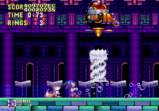 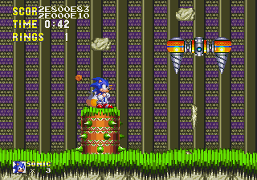
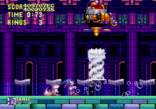 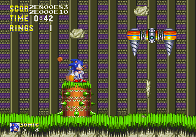Test test
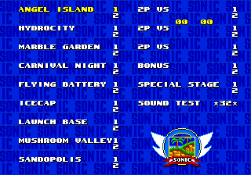 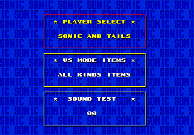 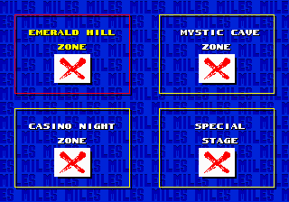
Requirement:
The system
When.
Some data for Knuckles as a playable character seems to still exist in the
game. Game Genie codes ASCA-AAHC ASCA-BA9Y or Patch Code
FFEF4C:0003 will allow you to "select" Knuckles as your character. You will
play as Sonic, but have Knuckles' character select, continue icons, and
"level-clearing" text. The end signpost will also feature Knuckles, though the
image uses Sonic's blue palette, and the markers on the score screens that
appear after a Special Stage use Knuckles' palette. As you might expect, this
code will save properly, allowing you to apply the code, create a save, then
continue to use "Knuckles" even without the Game Genie.
FFFA80:0101 makes a few bosses behave like Knuckles' versions: Fire
breath shoots missiles, Robotnik doesn't fly down when he creates the water
spout in Hydrocity, the spiked cylinder is in the Tunnelbot battle, and the
second boss in Launch Base Act 2 plays a broken version of Knuckles' bomb
cutscene when you defeat it (the bomb that should fly out of the wreckage
appears with glitched graphics). This suggests that Knuckles was not meant to
fight Big Arms at this point in development and was meant to go straight to
Mushroom Valley/Hill Zone, or even that Big Arms wasn't originally intended to
be in the game at all. After this cutscene plays, nothing else happens. The game
crashes some time after the cutscene for unknown reasons.
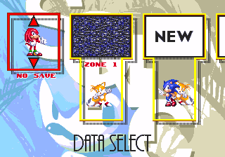 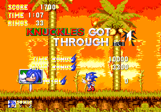
The cut-scene where Sonic arrives on Angel Island is glitched. The cutscene starts where Knuckles would normally start in the level. For some reason the fire-bombing cutscene starts while the glitched intro is going on and Sonic can fall through the ground and die.
The Insta-Shield graphics disappear at times.
The cut-scene at the beginning of Ice Cap Act 1 is the same as Tails'.
The pit at the beginning of Ice Cap Act 1 doesn't work correctly; the part where the bottom of the stage should connect to the top instead acts like a bottomless pit, causing you to lose a life.
In Launch Base Act 1, the cut-scene where Knuckles throws a bomb works, but the building does not load. This is because when you play as Knuckles in Sonic 3 & Knuckles, the building is already destroyed and the game simply does not load it.
The game soft-locks after defeating the Launch Base Act 1 boss. Sonic can still be controlled, but nothing else will happen. This is because Knuckles was supposed to fight two of them.
If you use the last code mentioned above and break the rocks leading to Knuckles's boss arena, the water will lower (As it does for Knuckles), but the screenlock will not lower sometimes and prevent you for continuing.
Although there is no boss in the Knuckles area in Angel Island, there are three hidden end-of-act monitors in place: one each of Thunder Shield, Aqua Shield and 10 Rings. Obviously, since there is no mini-boss to defeat and no signpost to uncover them with, they are completely inaccessible. These monitors are present in Sonic 3 & Knuckles with the same items.
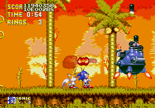 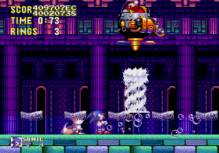 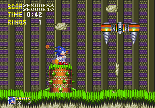
Microsoft, SEGA, Sonic Team.
The names of actual companies and products mentioned herein may be the trademarks of their respective owners.


Copyright © 2003-2018 Silver Sonic 1992, Chainspike, broken120x120. All rights reserved. (Fake copyrights are fun)